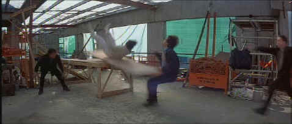

New Line/1998/87m/ANA 2.35
 |
Jackie constructs organic stunts ©New Line |
The story is
a simple cartoon set-up of mistaken identity and happenstance. Jackie plays the host of an
Australian television cooking show and gets to do some neat tricks with dough on camera.
When he bumps into a beautiful babe on the run, his instincts to protect her get the best
of him and before you know it he’s involved in the hunt for an incrimating tape of a
drug buy. The Chan production team surrounds him with some good-looking women and makes
the sets as stunt friendly as possible. Everyone will be happy to know Jackie survives
another film experience.
And boy are the stunts ingenious. What is especially pleasing is
how organic the stunts can be. In one sequence of the unending pursuit, Chan is cornered
on a building construction site. Every tool and construction set-up in incorporated.
Unfortunately, the climax stunt is pretty much standard fare and not up to the arsenal of
stunts that precede it.
New Line has produced a
splendid looking DVD from the Chan material. The colors are incredibly bright and
cartoon-like, a perfect choice for this film. This DVD has pop to spare. The energy of the
colors and the brightness of the images are good enough to compete with Jackie’s
highflying acrobatics. The aggressive 5:1 surround sound contains the requisite thumps and
thwacks of every good cartoon.